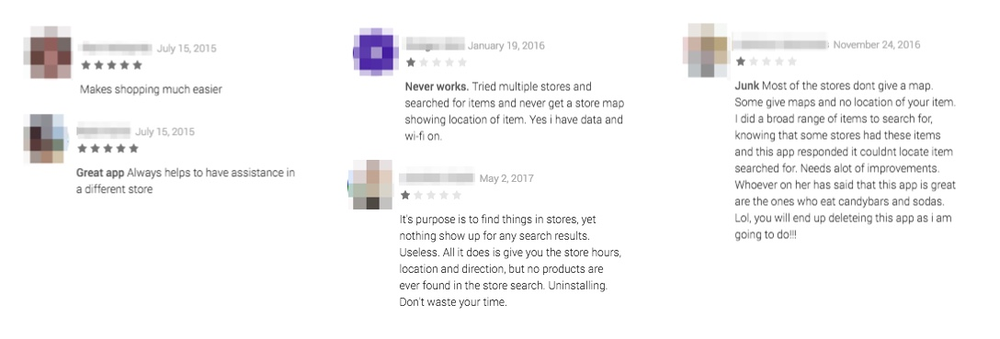

Grocery Shopping App
A software concept to streamline the shopping process, allowing users to gain information on the grocery store layout, product availability, and keep track of their grocery list.
After enrolling in a part-time User Experience course, I was tasked with selecting a product concept. While there were many possibilities for the type of project, I knew that I wanted to address a problem that I also found myself faced with. I decided to explore a concept for a grocery shopping app that could make the experience quicker and more pleasant.

Problem
Consistency of products and layouts between grocery stores vary, making it difficult to know if a store carries the item you’re looking for, and if it does, where the location of that item is.
Users need a way that they can shop without having to waste time looking, while also leveraging the technology that they already use.
Process
Learn
Interviews
Surveys
Market
Gather Research
Customer Journey Map
Personas
Ideate
Sitemap
Flows
Sketches
Design
Wireframes
Hi-Fidelity Designs
Prototype
Research
Interviews and surveys were conducted to pinpoint trends and issues among various types of shoppers revealing some common frustrations in the grocery shopping experience.
Pain Points
- Getting in and out of the store location
- Navigating the store during busy times
- Not being able to find a product
- Wait time for checkout
- Satisfaction with food quality and availability
Insights
- 94% make shopping lists
- 47% said it takes them at least an hour to shop
- 69% said they were frustrated or annoyed when they couldn't find an item and only 19% said they would just ask a sales associate
Other Sources
In a survey done in 2019 by Gallup, 81% of shoppers say that they never purchase groceries online and out of those that do, only 11% purchase at least once per month.
Speed is important to shoppers. In 2016, 45% of shoppers chose the store based on how easy it is to get in and out quickly. [marketingmag.com]
Users
Responses and trends were cross-compared and grouped into two primary personas.
Hannah
Shopping with my kids is a bit of a struggle. I like to get everything done in one trip.
Hannah is 36 and married with two children, ages 2 and 6. She stays home with her kids during the day and enjoys baking, hikes, and time with her family.
Motivations & Goals
- Make as few trips to the store as possible
- Remember all of the items on my grocery list
Behavior
- Prefers to shop only 1x a week
- Plans trips ahead of time and keeps a list of items needed
- Will make another trip if something was missed
- Shops during the week when it’s not as busy
Will
I really don’t enjoy grocery shopping. I like to get in and out of the store as quick as I can.
Will is a single 24 year-old student. He is studying to get his Bachelor’s of Technology in Computer Systems. He enjoys hanging out with friends and watching Netflix.
Motivations & Goals
- Reduce shop time
- Wants to make shopping less of a chore
Behavior
- Shops in the evenings after school or on the weekends
- Goes to the store at least 2x a week
- Has an idea of what he needs ahead of time
- Shops at a variety of stores based on convenience
Journey Map
After collecting the various sources of data, I created a customer journey map to unveil how the various touchpoints worked together and identify where there were opportunities for improvement.
Solution
The app will perform a couple of key functions to target both new and existing customers with the goals of reducing overall frustration and shop time.
- Manage shopping lists
- Search for specific items and view availability
- Group list items by where they’re located in the store
While individually, these functions may not provide a high enough level of impact, combining them will help save time and provide a more seamless shopping experience.
Existing Products
While there are a couple of similar solutions available today, they are unreliable and cause frustration among users with lack of consistency of stores supported, in addition to software bugs that appear on a store by store basis.
To avoid the downfall of similar products, the intention for this software is to be licensed to individual grocery stores where they can integrate directly with the store's inventory. This will not only improve the reliability of the app for customers, but will also allow the store to have control over the design and increase customer loyalty to their brand.
Design
After the list of requirements for the app were defined, a sitemap and wireframes were created to understand how someone would move through the software and to ensure that the key tasks felt intuitive and seamless.
I began with a list of the main screens and worked through them with a series of sketches to uncover the interactions required. The sketches were then used as a template for wireframes, where additional detail was introduced and the app really started to form.
While I did receive some feedback on the designs, under the tight deadline, testing of the wireframes was skipped and I moved straight into the hi-fidelity designs. (Read more about that in project learnings.)
1. Account Creation
An account would be required in order to save lists and store information. If found that this was a barrier to signup, additional functionality could potentially be added to integrate sign in with Google and/or Facebook to speed up the process.
On signing up, users would be prompted to select their primary store location. The location would depict the store layout that was presented along with the available inventory for specific items.
2. Product Search
Product search allows the app to be used for different purposes. If a user just wants to find a specific item in the store, they can quickly search for that item without first having to create a list. If they intended to shop at a later time, they could also save the item to a list.
3. Grocery List Management
Users have the option to create one or multiple lists. 52% of those survey kept multiple shopping lists at once.
Items can be added directly from the main screen or from inside an individual list. Clicking each item displays its location in their default store to easily locate.
4. Grouping Products
When it's time to shop, users can locate items in their custom display order, or, to increase shopping efficiency, they have the option to have them grouped by the aisle that they're located in.
Learnings
-
Invest more time on research prior to design. Starting out with a problem statement and no existing product was a challenge that I was unfamilar with. I had to work from scratch to gain more information about the market instead of working from some sort of product or user base. I realized for an actual product how much more work would need to be done in these phases to validate prior to starting the design and the likelihood that the initial purpose for the product may completely shift in that process.
-
Evaluating my approach to wireframes. Though wireframes did allow me to plan everything out without getting caught up on the design, in highsight, I would've handled this step in the project differently. I should've either used them for testing to identify potential problems before starting the design or, since they weren't used to their full benefit, spent less time on them and used it elsewhere in the project.
-
Value of experience mapping. While I was familiar with the purpose of experience mapping, this was my first time tackling it in a project. And while I honestly don't see it applying to every project in the future, it forced me to think through every step in the customer’s journey and unveil additional touchpoints that could affect the overall experience.
With More Time
Test the final design to identify any gaps in the functionality and potential problems in the user flows.
While I still would love this app for my personal use, I'll call a spade a spade; it's not a million dollar idea and it might just be time to call it and move on to the next.